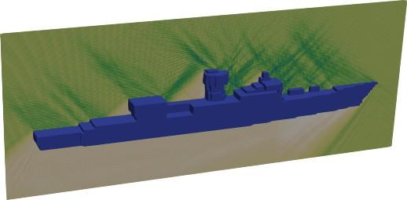

GoTEM3 — diffraction par une frégatescattering by a frigate
Simulation 3D en électromagnétisme impliquant plus d'un milliard de degrés de liberté. GoTEM3 est un solveur itératif de Trefftz sur grille cartésienne, fondé sur la formulation ultra-faible de Cessenat et Després : il ne requiert aucune factorisation de matrice et combine stratégie sans assemblage et préconditionneurs locaux et globaux. 3D electromagnetic simulation with more than one billion degrees of freedom. GoTEM3 is an iterative Trefftz solver on Cartesian grids, based on the ultra-weak variational formulation of Cessenat and Després: it needs no matrix factorisation and combines a matrix-free strategy with local and global preconditioners.
AvecWith S. Pernet (ONERA) etand M. Sirdey (doctorante ONERA-InriaONERA-Inria PhD student)